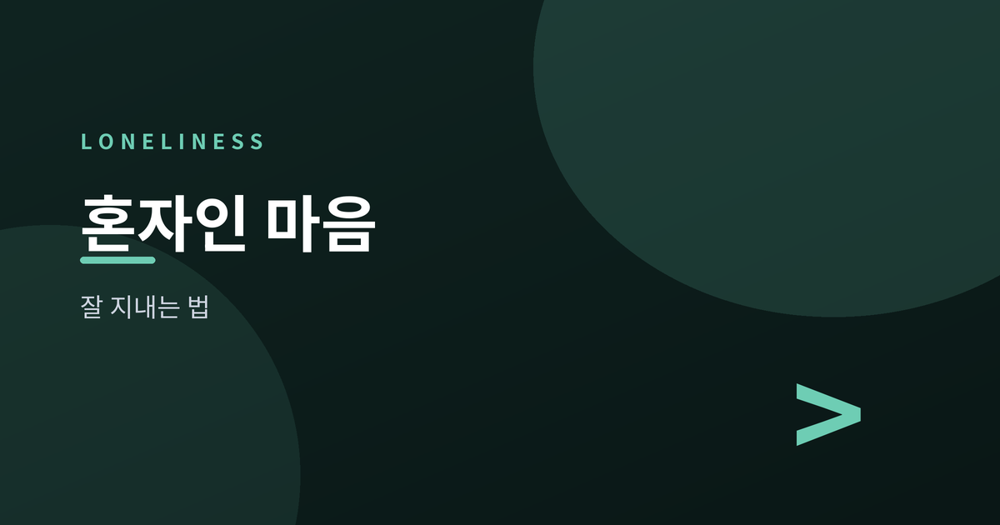
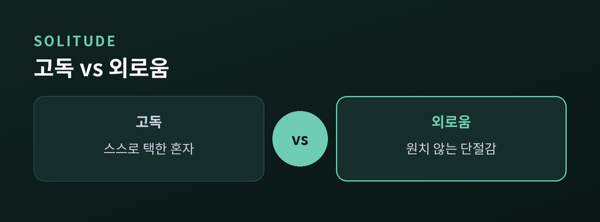
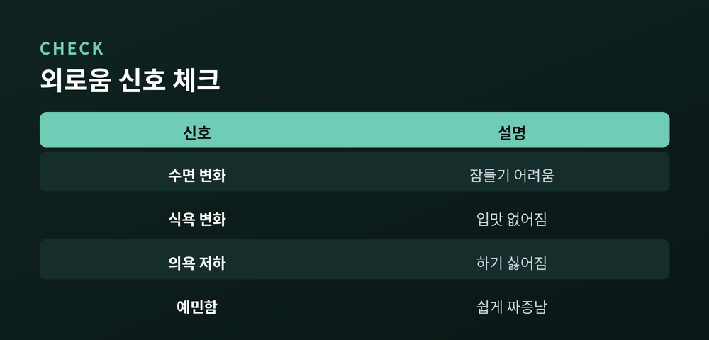
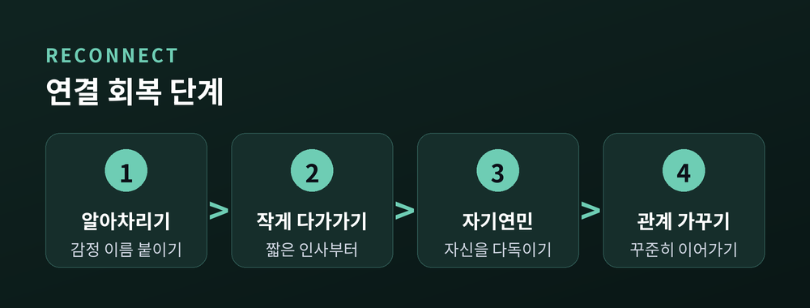
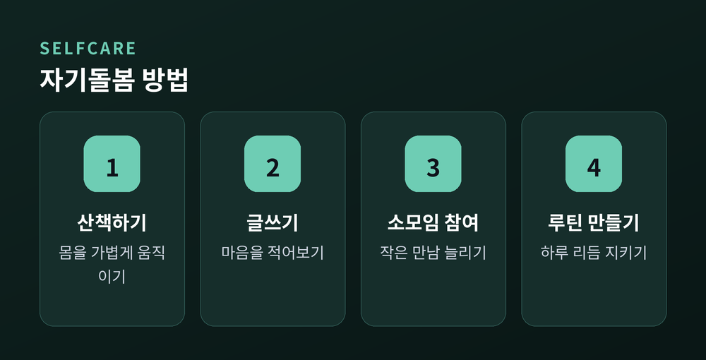

혼자인 마음과 잘 지내는 법

오늘은 외로움이라는 감정을 어떻게 다뤄야 할지 이야기해 보려 합니다. 누구나 살면서 한 번쯤은 혼자라는 느낌에 붙들립니다. 이 감정을 이해하고 돌보는 방법을 심리상담의 관점에서 정리해 보겠습니다.
두 단어는 자주 섞여 쓰이지만, 심리학에서는 이 둘을 구분합니다.
고독은 스스로 선택한 혼자만의 시간입니다. 방해받지 않고 생각을 정리하거나 쉬고 싶을 때, 사람은 고독을 찾습니다. 이때의 혼자는 회복의 자원이 됩니다.
외로움은 다릅니다. 원치 않는 단절감입니다. 곁에 사람이 있어도, 진짜로 연결되어 있다는 느낌이 없을 때 찾아옵니다. 예전엔 혼자 있는 것 자체가 문제라고 여겨졌습니다. 지금은 연결의 질이 부족한 상태로 이해합니다.
그래서 외로움을 다루는 첫걸음은 구분하는 일입니다. 지금 느끼는 것이 편안한 고독인지, 괴로운 외로움인지 스스로에게 물어볼 필요가 있습니다.

짧은 외로움은 누구에게나 지나가는 감정입니다. 문제는 그것이 오래 이어질 때입니다.
만성적인 외로움은 마음에 무게를 더합니다. 불안이 늘고, 자존감이 낮아지며, 작은 일에도 쉽게 지칩니다. 스스로를 고립시키는 생각이 반복되기도 합니다.
몸에도 흔적을 남깁니다. 잠들기가 어려워지고, 낮 동안의 활력이 줄어듭니다. 스트레스 반응이 오래 이어지면 신체 전반의 회복력에도 영향을 줍니다.
무엇보다 외로움은 눈에 잘 띄지 않습니다. 겉으로는 아무 문제 없어 보이는 사람도, 안으로는 오래 지친 상태일 수 있습니다.

외로움은 상황만의 문제가 아닙니다. 그 상황을 해석하는 생각의 습관도 함께 작동합니다.
"아무도 나를 이해하지 못한다." "나는 결국 혼자 남겨질 것이다." 이런 생각은 자동으로 떠오릅니다. 심리상담에서는 이를 연결 단절감이라 부릅니다. 관계를 맺어도 안전하지 않다고 미리 단정 짓는 인지적 왜곡입니다.
이 생각은 실제 행동에도 영향을 줍니다. 거절당할까 두려워 먼저 다가가지 않게 됩니다. 그렇게 물러서면 관계는 더 멀어지고, 그 거리는 다시 생각을 굳히는 근거가 됩니다.
이 고리를 끊는 방법은 생각을 사실로 받아들이지 않는 데서 시작합니다. 떠오른 생각은 감정일 뿐, 확정된 진실이 아닙니다.

외로움을 다루는 일은 거창할 필요가 없습니다. 작은 것부터 시작하시면 됩니다.
먼저 작은 연결을 회복해 보시길 권합니다. 안부를 묻는 짧은 연락, 이웃과의 인사 한마디도 충분합니다. 관계는 큰 사건이 아니라 반복된 작은 접촉으로 다져집니다.
동시에 자신에게 너그러워지는 연습이 필요합니다. 자기연민은 스스로를 탓하지 않고 다독이는 태도입니다. "혼자인 게 내 잘못이다"라는 생각 대신, 지금의 어려움을 있는 그대로 받아들이는 쪽이 회복에 도움이 됩니다.
외로움은 없애야 할 문제가 아니라, 돌봐야 할 신호입니다.
관계의 양보다 질도 중요합니다. 넓은 인맥보다 마음을 나눌 수 있는 소수의 관계가 더 큰 힘이 됩니다. 최근에는 지역사회 모임이나 취미 활동을 연결해 주는 사회적 처방도 활용됩니다. 의료적 처방 대신 사람과 활동을 처방하는 방식입니다.
다만 이런 노력에도 외로움이나 우울감이 오래도록 가시지 않고 일상을 해친다면, 혼자 견디지 마시고 전문 상담(상담사·정신건강의학과)을 받아보시길 권합니다. 전문가의 도움은 약함의 증거가 아니라, 회복을 앞당기는 선택입니다.

정리하면 이렇습니다. 외로움은 없애야 할 감정이 아니라, 돌봐야 할 신호입니다.
혼자인 마음과 잘 지내는 법을 물으신다면, 그 마음을 밀어내지 말고 가만히 들여다보시라고 답하겠습니다.